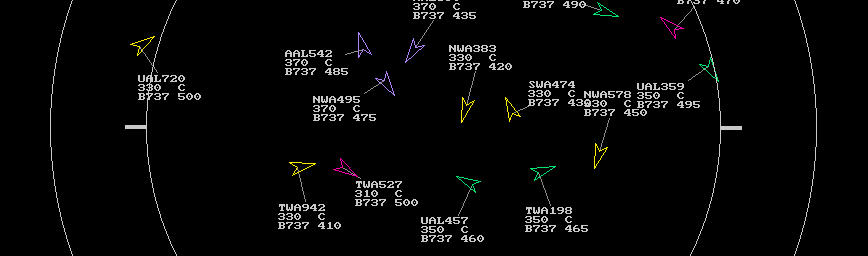

Problem:
To record gaze with high precision during natural use of complex displays
Example:
15" display @ 30" viewing distance, FOV = 22 x 17 deg
1024 x 768 pixels, 8x8 font
line spacing: 12 arc min (0.2 deg)
